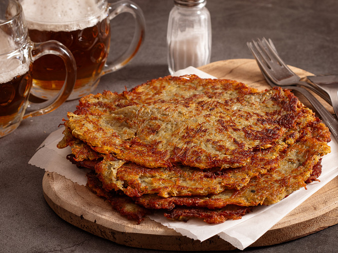

Tradiční české bramborové placky s česnekem, majoránkou a kmínem. Křupavé na povrchu, vláčné uvnitř – skvělá příloha i samostatný pokrm.
Česnek oloupeme a utřeme nebo prolisujeme.
Brambory oloupeme a nastrouháme najemno. Pokud pustí hodně vody, část slijeme.
Do brambor přidáme utřený česnek, vejce a mléko. Promícháme.
Dochutíme majoránkou, drceným kmínem a solí. Pokud je směs řídká, přidáme trochu polohrubé mouky.
Na pánvi s rozehřátým olejem tvoříme placky a smažíme z obou stran dozlatova.
Hotové bramboráky necháme okapat na papírové utěrce. Podáváme teplé, samotné nebo jako přílohu.